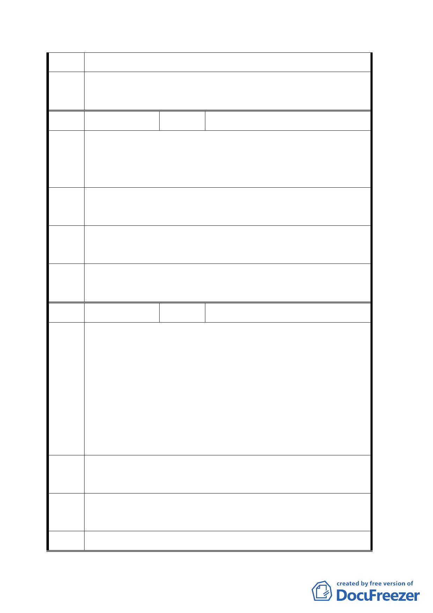

3. 指南宮方面若有整體規劃構想，留供規劃單位設計時參考。
委員會
同專案小組結論。
決議
編號
２
陳情人 張正村、蘇鄉添
陳情位置：文山區頭廷段二小段 369、370 地號（祥光寺）
陳情
陳情理由：
理由
休息站至祥光寺之銜接道路同意由本寺廟自行開設。
建議
在休息站銜接道路至祥光寺。
辦法
專案小 建議位置為轉角站不提供上下旅客，動物園園內站鄰近萬壽
組 結 論 路，未來可藉由經營管理方式之規劃服務周邊居民進出。
委員會
同專案小組結論。
決議
編號
３
陳情人 李彩鳳
纜車用地（三）應加強山區接駁的功能設置，路線應再細分多
線的接駁。
以貓空站分成三線接駁：
陳情
1. 往樟山寺。
理由
2. 往石獅腳。
3. 往貓空-草湳。
非假日每半小時發車，例假日每十分鐘發車。
建議
同陳情理由。
辦法
專 案 小 纜車站與山區各景點接駁系統，未來由系統經營者提供，相關
組 結 論 意見，請規劃單位納入參考。
委 員 會 同專案小組結論。
一一